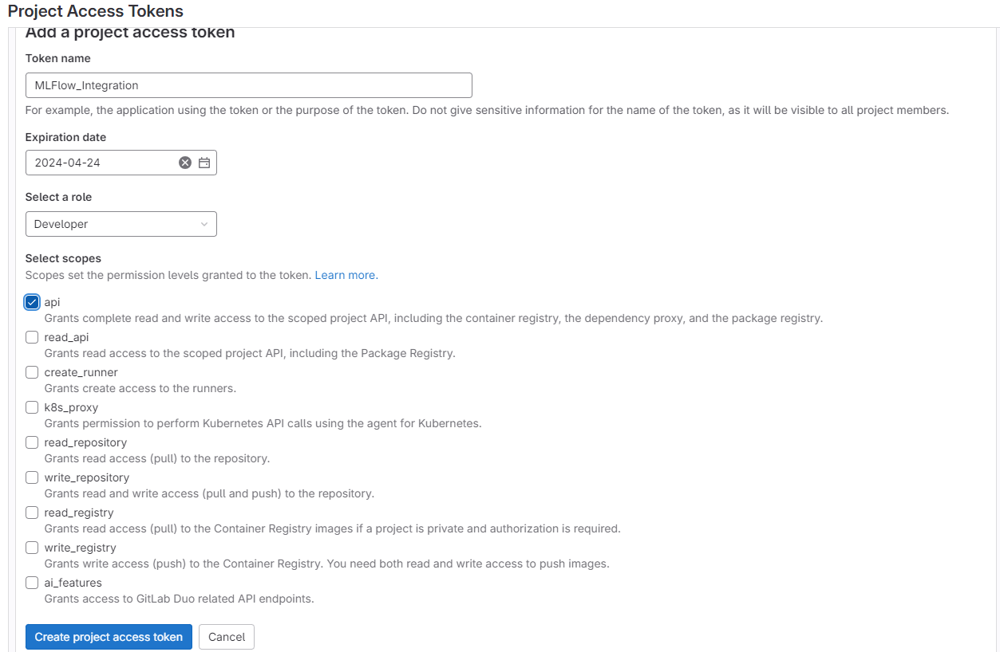

GitLab, founded in 2014, quickly emerged as a frontrunner in the DevOps
toolchain, offering a single application for the entire software development lifecycle. From project planning and
source code management to CI/CD, monitoring, and security, GitLab has provided comprehensive solutions that
streamline productivity and foster a collaborative environment for software development teams. Its ability to
support both the development and operations side of projects makes it particularly appealing for managing machine
learning (ML) projects, which inherently require cross-disciplinary collaboration between software engineers and
data scientists.
GitLab ML Ops
MLOps, a compound of machine learning and operations, aims to unify ML system development and ML system deployment.
The goal of MLOPs is to shorten the lifecycle of deploying machine learning models and provide continuous feedback between models
and development to ensure models are valuable and efficient. GitLab naturally facilitates MLOps with its DevOps toolchain (ie. CI/CD
automated testing, monitoring, ect.) but they saw the need to include some MLOps specific tools to reduce the gap between data scientist
and software developers.
Visual representation of MLOps integration in GitLab.
One major hurdle for MLOps is the messiness of model/data exploration. ML developers typically use jupyter notebooks and don't structure the notebook in a standardized way
making each notebook hard for colaberation. To combat this phenomina, Model registry tools like MLflow, W&B, ect. were made to help track
model production and help facilitate the effective sharing of models. These tools allow developers to log aspects of their models to ensure reproducability for organization
GitLab added the benifits of a model registry by incorperating MLFlow into their interface. First, the MFflow client
which would normally be hosted on a seperate server is hosted on the GitLab endpoint allowing all team members visibility into
ML model production. Second, GitLab nests it's experiements with
ML Flows allowing ML developers to log and store information about significant model's trained to assist in sharing within the team. Third,
GitLab included a Model Registry section to version models for deployment. The model registry can take a model experiment and
move it into a condolidated location where Operators have a the latest production ready models available with their artifiacts.
Finally using exisiting GitLab DEV tools, the deployment of models can be automated into new or existing pipelines
GitLab Experiments
Overview
Experimentation is at the heart of machine learning. With GitLab experiments,
ML developers can log their models
in GitLab with the information needed to share their findings and make the model run reproducable.It is commonly perceived
that the Code, Data, and Enviornment are needed to be tracked with a model to make it reproducable. We'll highlight these aspects
in our example
GitLab experiments does not force you to log your model in a way to ensure it is reporducable, but in my example below
I will highlight a basic way to. Understand that every team is different and you will need to cator how you use experiments
to your team.
Setup
This feature is still in Beta testing and has very limited documentaion. I will provide a step by step tutorial on
how to implement so that you don't have the same issues I did. To complete this you should already have a GitLab account
with at least one project.
Set Up GitLab API Key
Project Tokens
In your project, Navigate to 'SETTINGS' -> 'ACCESS TOKENS'
Add Token
Navigate to 'ADD NEW TOKEN'
Token Configuration

Name you token, Set exporation date, Select 'DEVELOPER' role (Experiments needs minimum of Developer role), Check "API" for Access Scope (Required Scope)